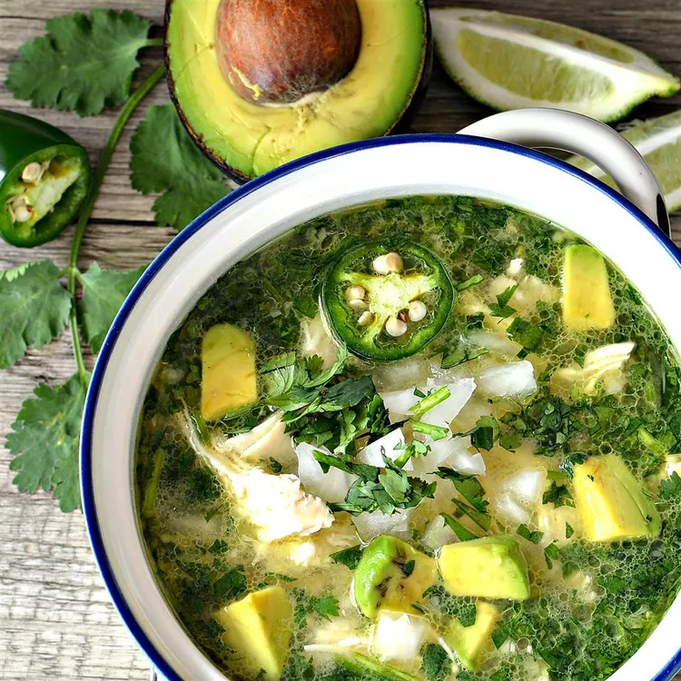

Spicy Lime Avocado Soup

Description
Top this spicy lime and avocado soup with sour cream or crème fraîche and serve it with
warm tortilla chips and a nice large mojito if desired. My husband tried to tell me not
to submit this recipe, as he didn’t want the whole world to know about it. But I say,
share what you have!
Ingredients
- 2 skinless, boneless chicken breasts
- 1 tablespoon olive oil
- 1 large white onion, chopped, divided
- 1 cup chopped cilantro, divided
- 2 jalapeño peppers, halved and thinly sliced
- 3 limes, juiced
- 3 cloves garlic, minced
- 4 cups water
- 2 tablespoons reduced-sodium chicken bouillon powder
- 3 large firm, ripe avocados, cut into chunks
- ¼ cup crumbled queso fresco, or to taste
Steps
-
Bring a small pot of water to a boil. Add chicken; boil until an instant-read
thermometer inserted into the center reads at least 165 degrees F (74 degrees C), about
7 minutes. Drain.
-
Run cool water over chicken to speed cooling process. Shred or finely slice chicken.
-
Heat olive oil in a large pot over medium heat. Add 1/2 of the onion, 1/2 cup cilantro,
jalapeño peppers, lime juice, and garlic; cook until onion is slightly greenish in
color, about 5 minutes.
-
Combine 4 cups water and bouillon powder in a small bowl; pour into the pot. Cook until
just heated through, about 5 minutes. Stir in chicken.
-
Ladle soup into four bowls. Top with remaining avocado, onion, cilantro, and queso
fresco.